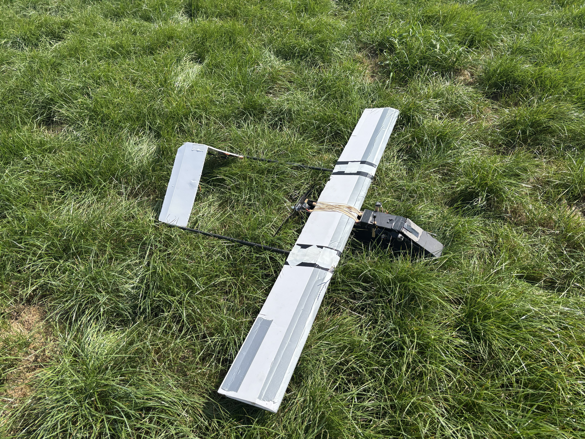
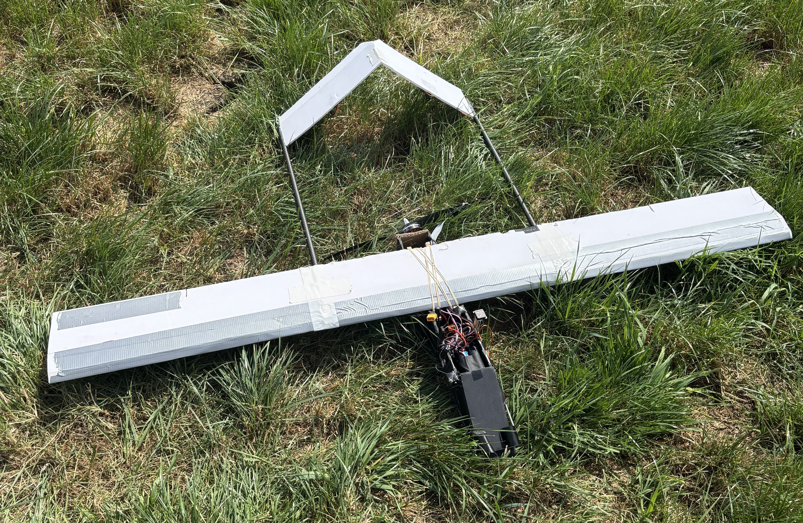
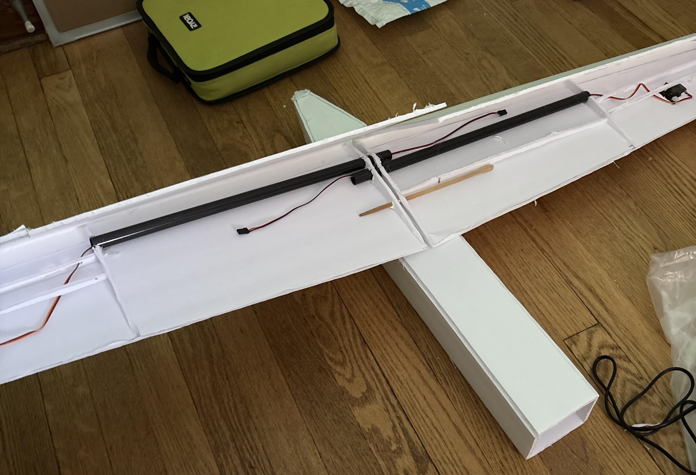
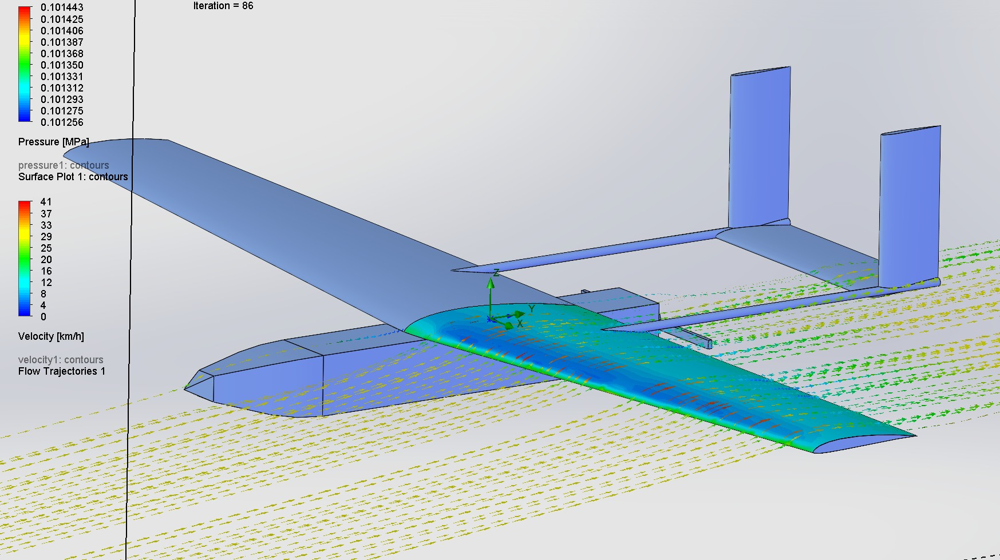

Projects
I wanted to make an autonomous/remotely operated aircraft that would be capable of reaching a far range (theoretical 10+ km range) by utilizing various
different features, such as a high aspect ratio wing, short/lightweight fuselage, and energy to weight (wh/kg) density batteries.
I achieved this by designing a glider-like wing, using a pusher-prop configuration to keep a fairly short aircraft while maintaining CG point, and spot-welding custom
Li-ion batteries which can have up to 40% increase wh/kg over typically-used LiPo chemistry batteries.
In testing the aircraft, I was able to reach an effeciency of approximately 120 mAh/km with a cruise speed of approimately 50km/h, which was essentially
exactly what I aimed for. The plane was capable of loitering for long periods of time while also having a high effeciency, and would reach the 10km goal if the data was
extrapolated to the total range of the aircraft.


This project consists of two separate proj of various different aspects which I had to combine into one working system. The plane included custom coded controls, operated by
flight simulator joystick, connected by ESP32 microcontrollers, and had Rylr998 radio modules to maintain communication. It was built in SolidWorks CAD initially to
get a preliminary design and create the blueprints for the foamboard structure of the wing. I used Solidworks Flow Simulation to optimize the chord length of the aircraft and
also selected the SD7037 airfoil as it has very good performance at lower Reynolds numbers, since the drone typically operates at a Reynolds number lower than 1 million.
The aircraft uses a 1000kv brushless motor with a 10x4 propeller which gives adequate thrust, and servos for the control surfaces and camera module.
The controls were mapped with Python by first taking the
joystick's data and sending it using serial communication through a USB port. This data onboard one ESP32 was sent through the transmitter radio to a reciever, which was
connected to the aircraft's ESP32. Due to the radio modules being long range but with a low data rate, the byte size had to be optimized in C++ as low as possible to
increase the data rate between the transmitter and reciever. Most of the individual data values were packed to 1 byte, which gives a range of 255 and contains the
joystick's integer range of 0 to 180. Apart from the main control surfaces on the aircraft, there is a 2-axis gimbal mounted on the underside of the UAV which allows
for rotation in a semi-sphere range underneath the aircraft and can be either mounted with a small video camera or a live FPV camera.
Tools & Skills: SolidWorks, CFD, Autonomous, UAV Design, ESP32 Microcontroller, Python, C++
Links: RC UAV GitHub

